01
View case study
01
View case study
Monkey Island Fight 2024
Solo developer
A recreation of the classic insult-fighting mechanic, built around branching dialogue, timing and player feedback.
Game development · Pixel art · 3D
I’m Pol Rovira, a game developer who combines programming and visual design to create interactive experiences in Unity, Aseprite and Blockbench.
Selected work
Playable studies and original projects focused on systems, game feel, narrative and visual feedback.
01
View case study
Solo developer
A recreation of the classic insult-fighting mechanic, built around branching dialogue, timing and player feedback.
 02
View case study
02
View case study
Solo developer
A close recreation of the first level, with custom movement, collisions, enemy behaviour and retro UI.
 03
View case study
03
View case study
Game designer & programmer
A turn-based tactical artillery game with destructible terrain, projectile physics and modular abilities.
 04
View case study
04
View case study
Designer, writer & programmer
A narrative-driven 2D action platformer combining combat, branching dialogue and cinematic scene flow.
Product development
Focused digital products built around real workflows, responsive interfaces and clear interaction design.

Powerlifting training PWA
Frontend developer & UX/UI designer
A progressive web application for planning, editing and tracking structured powerlifting programmes from a focused mobile interface.

Shared household planning PWA
Solo developer & UX/UI designer
A responsive household application for planning weekly meals, maintaining a reusable menu library and synchronising a shared shopping list in real time.
Visual development
Character design and animation studies made with Aseprite and Photoshop.
 01
Open gallery
01
Open gallery
Character design & animation
Retro-futuristic player, enemy, NPC and boss sprites designed for clear in-game readability.
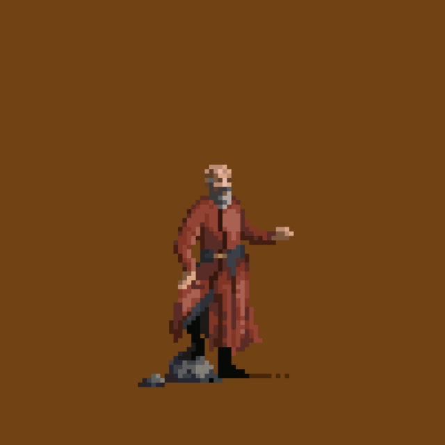
02 Open galleryCharacter design
A collection inspired by fantasy literature, exploring silhouette, pose and limited-palette expression.
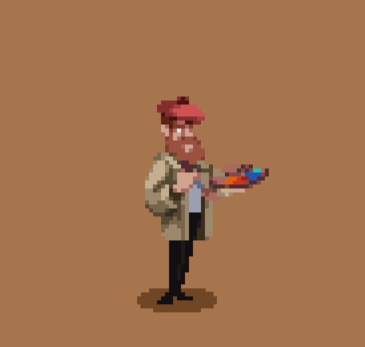
03 Open galleryCharacter design
A cast of mystery archetypes built around distinctive posture, costume and personality.
Shape and silhouette
Game-ready low-poly assets modelled in Blockbench and designed for real-time readability.
 01
View model study
01
View model study
Low-poly model
A simplified digital encyclopaedia and item set designed around clean, recognisable silhouettes.
 02
View model study
02
View model study
Low-poly model
A stylised recreation focused on the recognisable winged profile and layered metal forms.
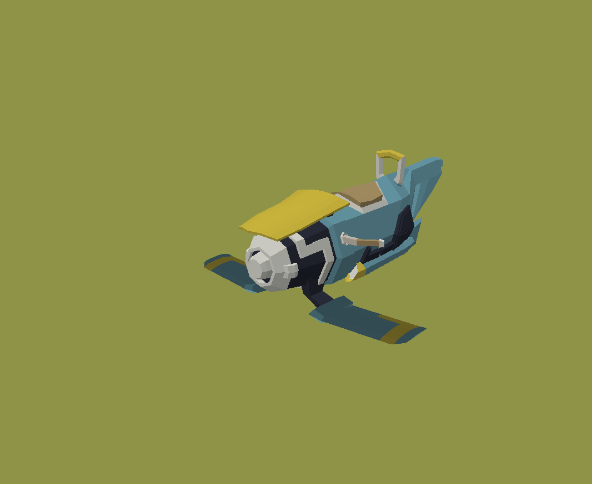
03 View model studyLow-poly models
A small vehicle collection exploring distinct silhouettes within one coherent visual language.
Background
A multidisciplinary foundation combining development, interaction design, animation and game production.
University of Vic — Central University of Catalonia
Covered the full digital product lifecycle, including concept, design, development, validation and post-production. The programme included 2D and 3D modelling, animation, immersive systems, mobile applications and interactive web experiences.
Universitat Oberta de Catalunya
A project-based programme focused on game design and development with Unity and C#, including 2D and 3D programming, artificial intelligence, multiplayer development and user experience design.
Toolkit
Tools I use across programming, game development, asset creation and collaborative production.
About
A solo project that reimagines the classic insult-sword-fighting mechanic from the Monkey Island series. Built during my Master’s programme as both a tribute and a technical exercise in narrative design.
My goal was to recreate the charm and rhythm of the original insult fights. The exchange needed to feel reactive, funny and sharp, with the player winning through understanding rather than simple selection.
I designed a branching dialogue structure where insults and responses carry consequences, creating layered chains that escalate dynamically. The system uses C# ScriptableObjects and a focused state manager.

The interface keeps a clean retro feel while using subtle motion and sound cues to reinforce the rhythm of the exchange. Each line and comeback receives synchronised visual feedback.
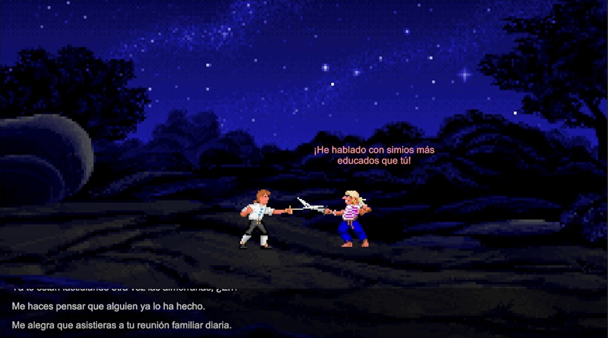
Comedy depends on rhythm, so I built a delay-and-pause system to control delivery. Pauses adapt to line length and player choice timing, helping each exchange land more naturally.
This project showed me that humour in games is engineered through writing, pacing, agency and feedback. It also strengthened my work with state machines, dialogue trees and Unity UI systems.
About
A recreation of the first level of Super Mario Bros using Unity and C#, preserving the original structure, visual rhythm and tightly tuned gameplay.
I focused on reproducing the feel and learning rhythm of the original first level, with particular attention to physics, collision, jump timing and enemy behaviour.
The biggest challenge was matching Mario’s jump arc and momentum. Unity’s physics were heavily customised to produce a controller that feels both snappy and slightly floaty across grounded, airborne and sprinting states.

The level was recreated tile by tile from gameplay references. Blocks, pipes, gaps, enemies and power-ups were placed to retain the original pacing and teaching sequence.
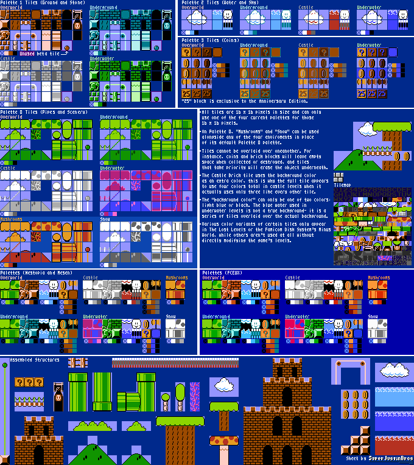
The HUD mirrors the original score, coin and timer structure. Typography and pixel alignment were treated as part of the gameplay feel rather than decoration.

Rebuilding a classic improved my understanding of design intent, custom character controllers, tile-based systems and the precision required to reproduce retro mechanics in a modern engine.
About
A turn-based combat game inspired by classic artillery titles, featuring customisable mechs, tactical decisions, destructible terrain and physics-driven projectiles.
The project explores an accessible tactical loop with enough depth to reward positioning, weapon choice and terrain awareness.
I implemented 2D movement and projectile behaviour with custom mech weight and friction values. An aim-assist system communicates the likely firing path without removing player judgement.

The tile system reacts directly to projectile impacts. Bullets detect and remove tiles within a configurable impact radius, changing routes and cover during a match.

The HUD prioritises health, abilities and turn information. Its industrial-futuristic language uses strong highlights to keep tactical information readable.
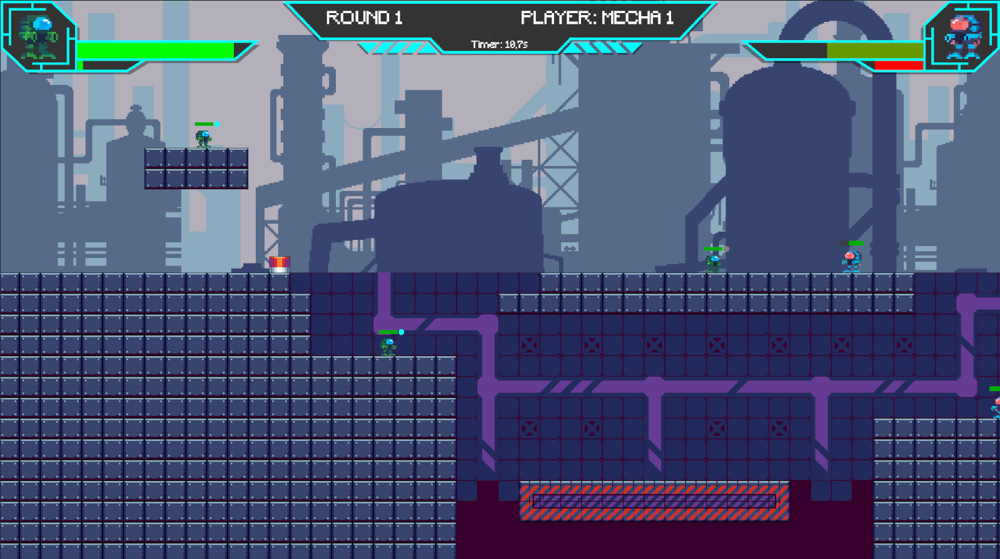
The project strengthened my understanding of turn-based architecture, physics integration, destructible environments and modular ability design.
About
A narrative 2D action platformer set in a cyberpunk world of moral choices and memory manipulation. The player controls Nova, a rogue detective confronting Project SOMA and her sister Astra.
SOMA began as a storytelling experiment about identity. Player decisions shape Nova’s relationships, moral position and the revelations she encounters.
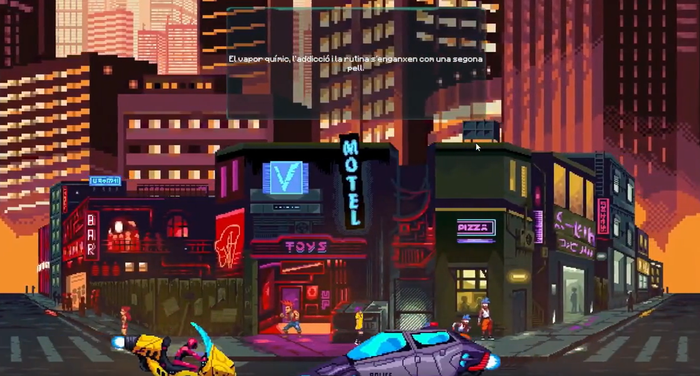
Combat combines projectile attacks and evasive movement against aggressive AI. Bosses such as Cors and Astra introduce phase-based encounters that ask the player to adapt.

Branching conversations allow the player to define Nova’s responses and influence her relationships. Typing effects, fades and internal monologues support the tone of each scene.

Scripted transitions, fades and controlled scenes shape pacing without separating narrative from play.

Pixel art, fog particles, animated water and reflective surfaces establish the cyberpunk atmosphere. A custom audio manager handles ambience, enemies, interface sounds and dialogue typing.

SOMA brought together modular development, combat, interactive storytelling, animation, audio management and scene transitions in one coherent project.
Concept
A pixel-art collection inspired by fantasy literature. Each sprite translates a recognisable character into a limited visual language built around silhouette, posture, palette and a few defining details.
Character set
The First of the Magi: brilliant, manipulative and intimidating beneath a composed exterior.

A relentless warrior driven by vengeance, communicated through stance and restrained colour.

An arrogant noble whose polished appearance contrasts with the uncertainty beneath it.

A gifted musician, magician and swordsman represented through a confident, theatrical silhouette.

The Bloody-Nine: a hardened warrior whose heavy silhouette carries a violent history.

An inquisitor defined by physical damage, sharp intelligence and an unmistakable crooked posture.
Tools
Aseprite · Pixel art and pose exploration
References
The First Law · The Kingkiller Chronicle
Focus
Clean silhouettes, unique palettes and expressive poses.
Concept
A mystery cast designed as readable archetypes. Costume, posture and silhouette do most of the storytelling, giving each figure an immediate role while leaving room for suspicion.
Cast
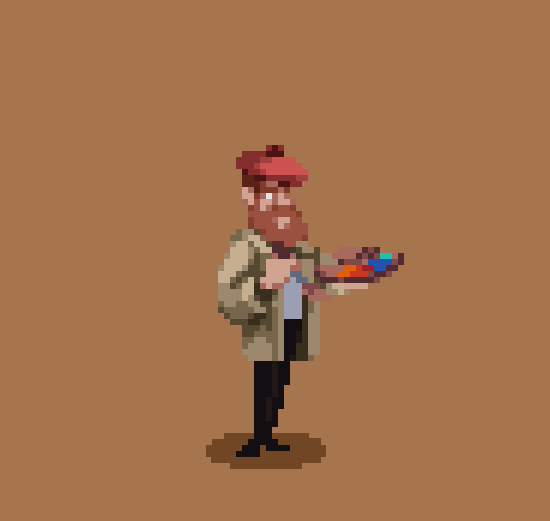
A bohemian painter with a sharp eye for colour and gossip.

A perfectionist whose temper is as hot as the kitchen.
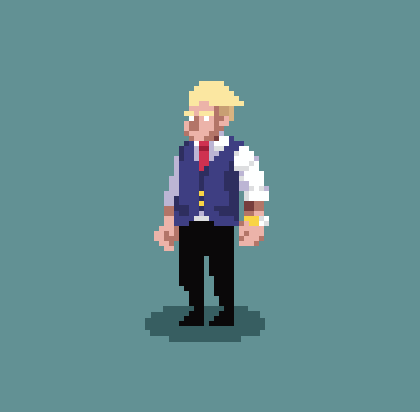
A deal-maker with grand plans and more confidence than certainty.
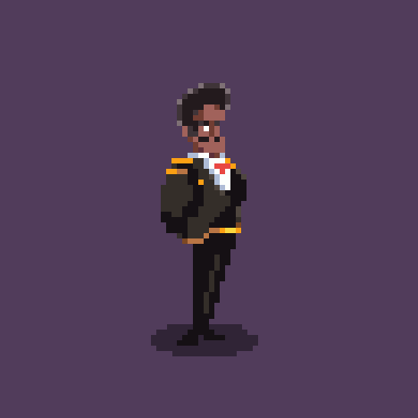
An influential landlord accustomed to controlling the room.
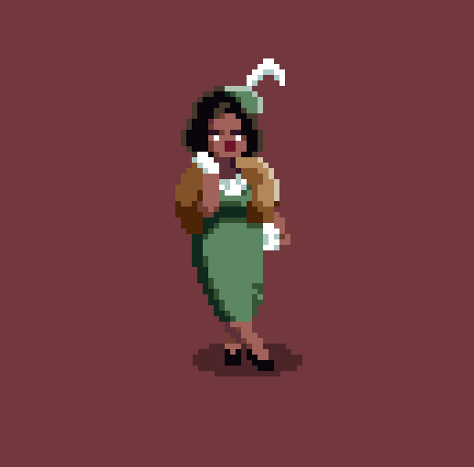
Pampered, clever and more observant than people expect.

An inseparable pair with a talent for coordinated mischief.

An eccentric matriarch with a cane and a sharper wit than she reveals.
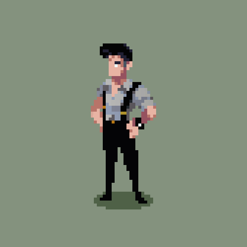
A street-smart investigator guided by instinct and accumulated evidence.

Impeccable manners, impeccable alibis and an unreadable expression.
Tools
Aseprite · Pixel art and character exploration
Focus
Silhouette, costume, personality and visual contrast.
Concept
A set of pixel-art characters for Sentient. The visual language combines a retro-futuristic mood with strong silhouettes and controlled colour contrast so players can distinguish roles instantly during play.
Game cast

An agile protagonist designed for clear motion and fast-paced encounters.
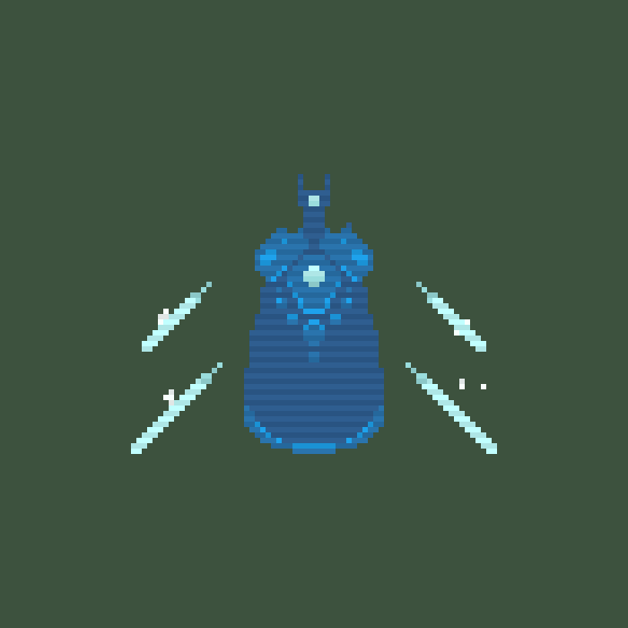
A towering sentient AI presence built around scale, symmetry and area attacks.

A compact, enigmatic figure who guides the player through cryptic messages.

A grounded combat unit equipped with a flamethrower and a heavy industrial silhouette.

A scouting unit that attacks through ground spikes and low, compact movement.
Tools
Aseprite · Pixel art and animation
Art direction
Retro-futurism, readability and role distinction.
Production goal
Sprites that remain legible at small in-game sizes.
Overview
A compact low-poly prop study translating familiar item shapes into a simplified real-time style. The focus is immediate recognition with minimal geometry.
Focus
Readable silhouettes and compact geometry.
Approach
Simple forms, restrained detail and strong colour blocking.
Use case
Real-time games and stylised scenes.
Overview
A low-poly recreation of Malenia’s winged helmet, prioritising the recognisable profile, layered metal forms and ornamental rhythm while keeping the model economical.
Focus
Iconic silhouette and layered construction.
Challenge
Simplifying ornamental forms without losing identity.
Style
Stylised low-poly interpretation.
Overview
Power App turns a detailed powerlifting spreadsheet into a focused mobile product. It organises each training day, tracks completed work, records actual performance and keeps the full programme editable without requiring an account or backend.
Problem
The original programme contained several weeks, five training days, warm-ups, mobility work, prescribed loads and real performance data. The challenge was to preserve that depth while making each workout quick to read and operate from a phone.
Product solution
Daily, Plan, Program, Warm-up and Mobility views read from the same underlying training data. Users can move between immediate workout execution and the complete programme without duplicating information or losing context.
Complete exercises, review prescriptions and record real results.
Modify phases, exercises, loads and notes directly in the interface.
Keep edits, completion states and actual results in the browser.
Use the product as a standalone mobile application.
Interface system
Large day labels, compact controls, clear completion states and generous touch targets reduce friction in a gym environment. Light and dark themes preserve the same information hierarchy while adapting to different lighting conditions.

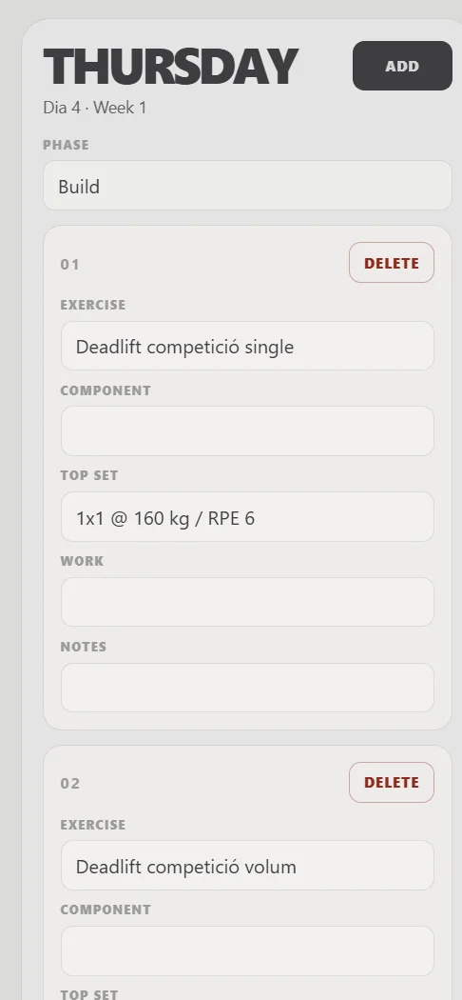

Technical approach
The interface is rendered from JavaScript state and a separate programme data source. LocalStorage persists the editable plan, exercise completion and actual results. A web app manifest and service worker provide installable, app-like behaviour.
Result
The finished application replaces the friction of consulting a large spreadsheet during training with a dedicated, editable and installable workflow. It also demonstrates product thinking beyond visual implementation: data structure, persistence, progressive enhancement and task-focused UX.
Product focus
Fast workout execution and low-friction editing.
Technical focus
Shared state, local persistence and progressive web app behaviour.
Design focus
Mobile hierarchy, touch interaction and clear completion feedback.
Overview
Weekly Meal Planner is a responsive household application for organising lunches and dinners, maintaining a reusable menu library and sharing a shopping list across connected devices.
Problem
The product needed to make a complete week understandable at a glance while also supporting reusable menus, external plans, different household members and a shopping list that stays synchronised between devices.
Product solution
Each lunch and dinner slot can remain empty, reference a saved menu or represent an external event. Assignments can belong to either person or both, making the weekly plan useful without turning it into a complex calendar product.
Fourteen structured slots covering lunch and dinner from Monday to Sunday.
Create, edit, tag and reuse meal combinations across different slots.
Add pending items and mark purchases with immediate visual feedback.
Firestore listeners propagate changes between connected devices.
Responsive experience
On desktop, the shopping list becomes a sticky companion to the planner. On mobile, the content stacks vertically and a fixed bottom navigation keeps the two principal areas easy to reach.
Interaction design
Menus are managed separately from the weekly plan, so dishes, notes and tags only need to be entered once. The shopping list stays deliberately lightweight, with a two-second completion animation that confirms an action before the item disappears from the active list.
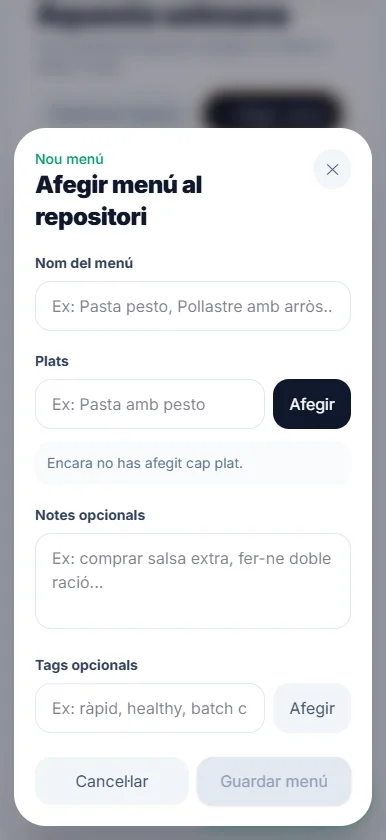

Technical architecture
A central data hook coordinates household bootstrap, subscriptions and mutations. Firestore operations are separated into menu, planner and shopping services, while TypeScript models keep the interface and persistence layer aligned. Vite and Workbox provide the production build and installable PWA shell.
Privacy boundary
The application was designed for one household and does not currently include authentication. Because anonymous visitors could otherwise write to the same Firestore data, the portfolio links to the source code and documents the product through screenshots rather than exposing the private live workflow.
Result
Weekly Meal Planner demonstrates end-to-end product development: problem definition, information architecture, responsive interaction design, typed component development, real-time data synchronisation and progressive web app delivery.
Product focus
Meal planning, reusable content and shared household coordination.
Technical focus
React architecture, typed models and real-time Firestore data.
Design focus
Responsive planning, quick actions and clear visual ownership.
Overview
A small collection of futuristic vehicles exploring how proportion, mass and profile can create distinct identities while maintaining a shared visual language.
Focus
Variant design within one coherent family.
Approach
Strong silhouettes, simple planes and purposeful colour accents.
Use case
Stylised real-time vehicle assets.